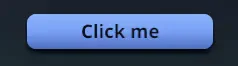

<button>
<button> is a <node> meant for controls. It takes the same
style and props as a <node> and has no built-in look; what it adds is
pointer behavior: it blocks the pointer by default, always tracks hover and
press, and owns every click that lands inside it. On the Bevy side it
carries bevy_ui's Button component.
Usage
const [count, setCount] = useState(0);
<button
onClick={() => setCount((c) => c + 1)}
style={{
padding: { horizontal: 16, vertical: 8 },
borderRadius: 8,
backgroundColor: "#7aa2f7",
cursor: "pointer",
}}
hoverStyle={{ backgroundColor: "#89b4fa" }}
pressStyle={{ backgroundColor: "#5a7fd6" }}
>
<text style={{ color: "#1a1b26" }}>Clicked {count} times</text>
</button>;hoverStyle and pressStyle give the button its feedback with no React
state. See State styles for the overlay rules.
How it differs from <node>
<node> |
<button> |
|
|---|---|---|
Default focusPolicy |
"pass" |
"block" |
| Owns clicks | Only with onClick or an onPointer* |
Always, with or without onClick |
| Hover and press state | Tracked only with state styles, handlers | Always tracked (Bevy's Interaction) |
| Bevy components | Node |
Node, Button, Interaction |
It blocks the pointer
A press on a button stops there: the 3D scene, siblings behind it and its
ancestors don't receive it, so clicking a toolbar button doesn't also start
a camera drag. Set focusPolicy: "pass" in its style to let the pointer
through; unsetting it returns to "block". See
Focus policy.
Blocking also ends hover for what is beneath: while the pointer is over the
button, a hover-styled card around it loses its hoverStyle and gets an
onPointerLeave. Give the button focusPolicy: "pass" if the card should
stay hovered.
It owns its clicks
- A click anywhere inside the button, on its
<text>label or any other child, fires the button'sonClick. - A button without
onClickstill takes the click: anonClickon one of its ancestors does not fire. Clicks never bubble. - A child with its own
onClickoronPointer*handler gets the click instead of the button. onClickfires for the primary mouse button (or a tap) on release over the button the press started on. Pressing, dragging off and releasing elsewhere does not click. For other buttons useonPointerDownand reade.button. See Mouse.
Building a button component
The element is deliberately bare: wrap it once in your own component with
your look, label styles and press feedback. The demo app's Button
(components/Button.tsx)
is a fuller example, combining gradients, a pinch
filter driven by an
animated value, and a shadow that
flattens while pressed.

Limits
- There is no
disabledattribute. To disable a button, drop itsonClick(it still swallows the click) and style it as disabled. - A
<button>is not focusable and has no keyboard activation: Tab, Enter and Space don't reach it.focusStyleapplies only if your Rust code gives the entity Bevy'sInputFocus. - There is no
ariaLabel. Bevy names the button for assistive tech from its child text when it mounts, so an icon-only button has no name.
See <button> in the element reference.